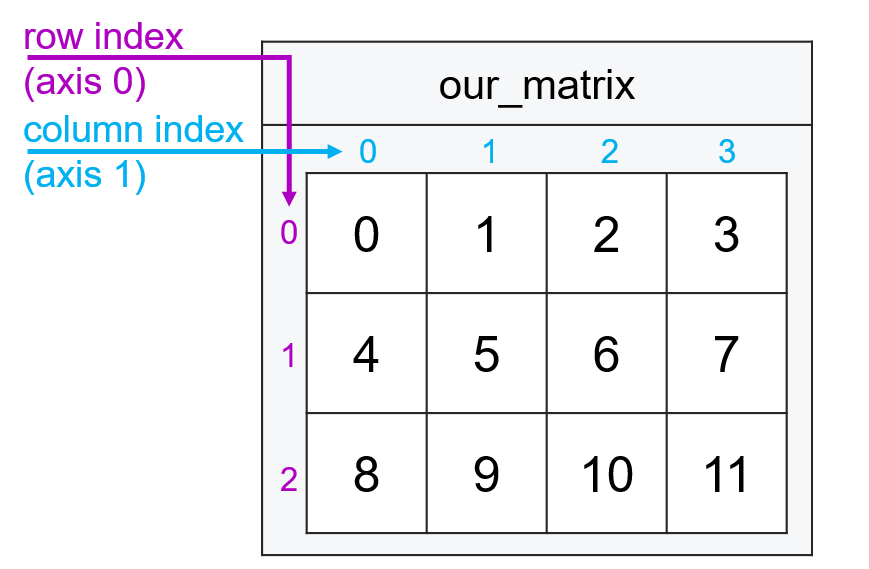
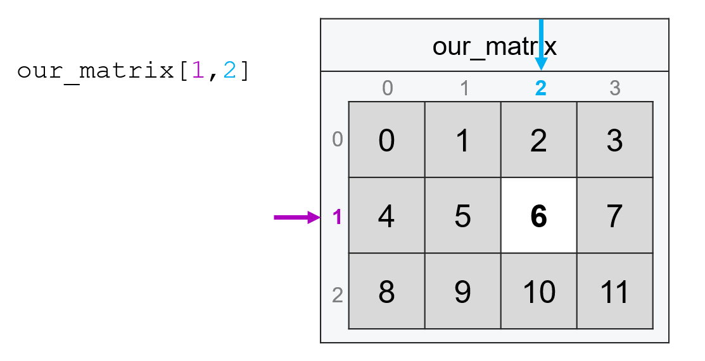
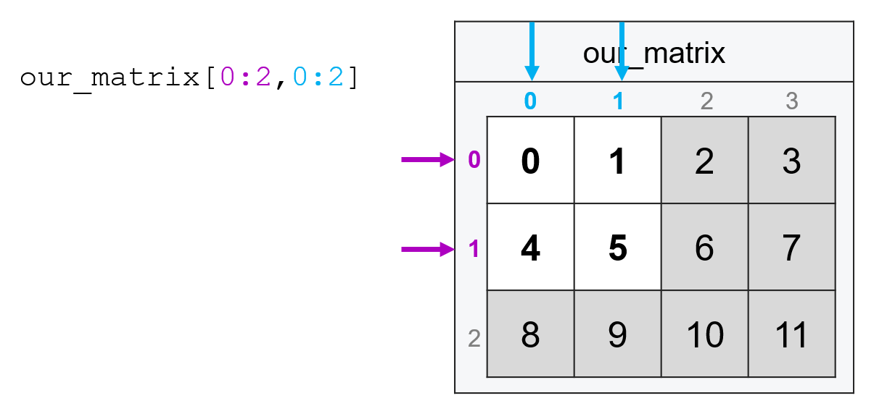
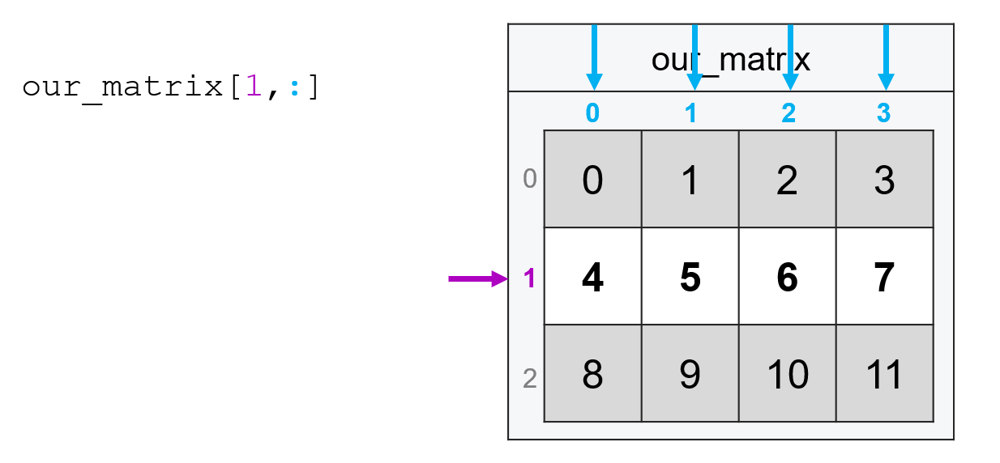
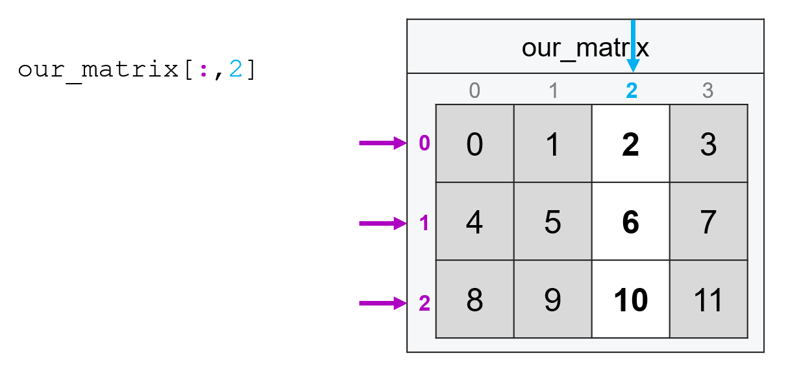
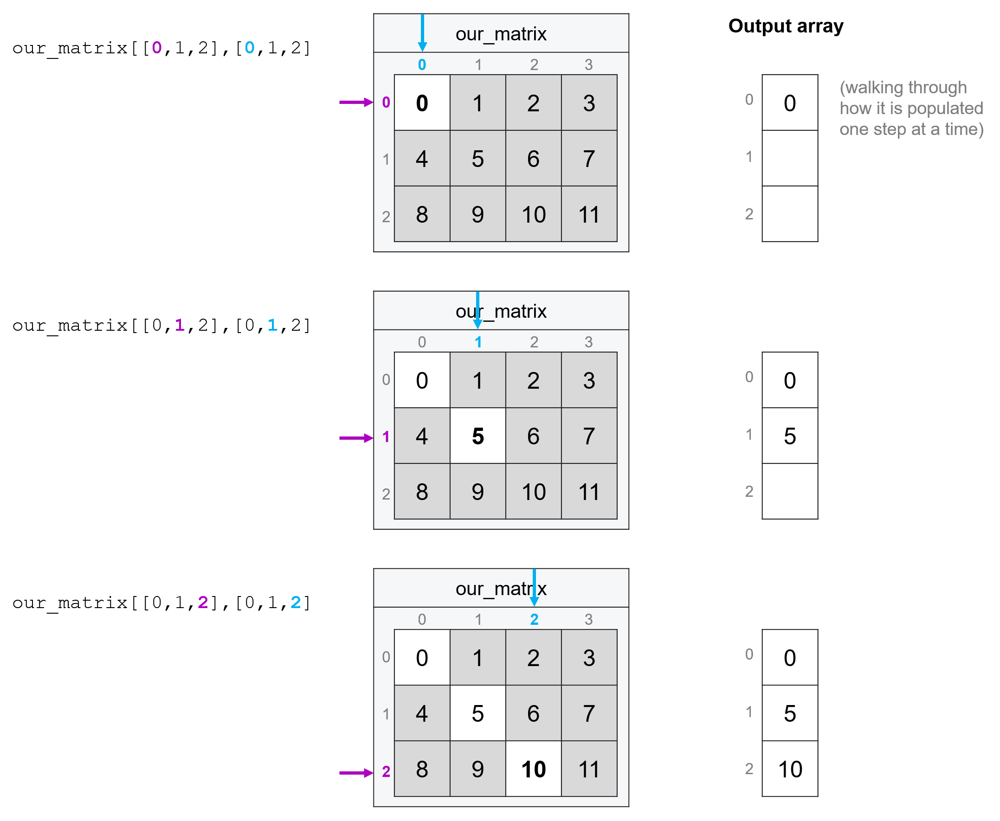

Subsetting Matrices#
The great thing about matrices is that since they are just generalizations of vectors from one dimension to two, subsetting matrices works almost the same way it works with vectors.
Basically, instead of identifying a subset by passing an index in square brackets (e.g. [1]), we pass two indices (the first corresponding to a location along the first dimension, the second corresponding to a location along the second dimension) separated by a comma (e.g. [1, 1]).
Subsetting by Simple Index#
Suppose we have the following matrix:
import numpy as np
our_matrix = np.arange(12).reshape((3, 4))
our_matrix
array([[ 0, 1, 2, 3],
[ 4, 5, 6, 7],
[ 8, 9, 10, 11]])

To subset by simple indexing, we pass an index on the x-axis (rows) and index along the y-axis (columns) separated by a comma.
For example, if we wanted the entry from the second row and third column (as always, remembering the first entry in each dimension has index 0), we’d type:
our_matrix[1, 2]
6

And just like with vectors, we can also pass ranges of indices using :. So if we wanted the four elements in the top left corner of our matrix, we could pass the following (recall that with : ranges, the last element is not included):
our_matrix[0:2, 0:2]
array([[0, 1],
[4, 5]])

The one behavior that comes up in matrices that tends not to come up in vectors is that if you want ALL entries along a specific dimension, you still put in a comma and type : for the dimension on which you want all observations. So if I wanted all the columns in the second row (index 1), I’d type:
our_matrix[1, :]
array([4, 5, 6, 7])

Or if I wanted all the rows of the third column, I’d type:
our_matrix[:, 2]
array([ 2, 6, 10])

Subsetting with Logicals#
Subsetting with logical vectors also generalizes from vectors to matrices in the same way. To illustrate, let’s go back to our toy matrix of survey responses where each row represents a different person, and the columns represent respondent age, income, and years of education:
import numpy as np
survey = np.array(
[[20, 22_000, 12], [35, 65_000, 16], [55, 19_000, 11], [45, 35_000, 12]]
)
survey
array([[ 20, 22000, 12],
[ 35, 65000, 16],
[ 55, 19000, 11],
[ 45, 35000, 12]])
If we wanted to select all the rows where income was less than the US median income (about 64,000), we would first extract the income column, then create a logical column that’s TRUE if income is below 65,000, then put that in the first position of our square brackets:
income = survey[:, 1]
income
array([22000, 65000, 19000, 35000])
below_median = income < 64000
below_median
array([ True, False, True, True])
survey[below_median, :]
array([[ 20, 22000, 12],
[ 55, 19000, 11],
[ 45, 35000, 12]])
Or, of course, we could do that all in one line instead of breaking out the steps:
survey[survey[:, 1] < 64000, :]
array([[ 20, 22000, 12],
[ 55, 19000, 11],
[ 45, 35000, 12]])
Subsetting by Row and Column Simultaneously#
Often, we don’t just want to subset rows or columns, but both at once. For example, suppose I wanted the education levels of everyone with incomes below the US median. I could do this in two steps by subsetting rows and then subsetting columns:
below_median = survey[survey[:, 1] < 64000, :]
below_median[:, 2]
array([12, 11, 12])
Or I can do it all in one command!
survey[survey[:, 1] < 64000, 2]
array([12, 11, 12])
So what is the average education of people earning less than the median income in the US in our toy data?
np.mean(survey[survey[:, 1] < 64000, 2])
11.666666666666666
OK—I know we’ve just covered a lot, but hopefully, that example makes clear how quickly we can start doing really, really powerful analyses and answering substantive questions just by subsetting our data carefully.
Fancy Indexing#
Just like with vectors, you can also subset matrices with fancy indexing by passing a list or array of indices. Unlike in vectors, however, the behavior of fancy indexing isn’t quite analogous to what you get with simple indexing. Honestly, it’s weird enough that I never use it, but here it is for completeness:
Basically, to do fancy indexing you pass two lists or arrays separated by a comma, then the entries of those lists are paired up to create coordinates. So for example, the following code:
our_matrix[[0, 1, 2], [0, 1, 2]]
array([ 0, 5, 10])
Is pulling the entry at 0, 0, the entry at 1, 1, and the entry at 2, 2 (e.g. the matrix’s diagonal).

As I said, I don’t ever use this behavior personally, but it’s good to be aware it exists.
Naming Rows and Columns#
If you’ve worked with matrices or data frames in other languages, at this point you may be saying “Why do I have to identify my columns by index?! Can’t I give them nice, human-readable names?”
The answer is yes, numpy does provide some utilities for naming rows and columns. However, they’re a little clunky, so most people interested in being able to name their columns end up using a different library called pandas which will be the focus of one of our later courses. Pandas is a library that is built on top of numpy—so it’s really important we learn numpy before we learn pandas!—and provides a lot of tools to make numpy easier to use, like the ability to easily give your columns human-readable names.
Exercises#
Using
np.arange, create a 4 x 5 matrix with all the numbers from 0 to 19.Subset the bottom, right-most entry (the number 19) from the matrix with simple indexing.
Subset the entire second row of the matrix (the row starting with the number 5) with simple indexing.
Subset the third and fourth columns of the matrix (the columns starting with 2 and 3) with simple indexing.
Create the matrix
surveycreated above. Recall that each row of this matrix contains survey responses from a different person, where the first column contains respondent ages, the second column contains incomes, and the third column contains years of education. Subset the matrix with a logical test to get only respondents with 12 or more years of education.Now, in a single line of code, subset your
surveymatrix to get the incomes of respondents with 12 or more years of education.Now, in a single line of code, calculate the average income of respondents with 12 or more years of education.